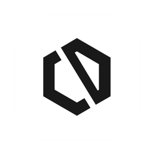

Dirección visual de CloseLabs Voice (versión final, ronda 3). Es la primera propuesta, con el lila un poco más presente para que se sienta el color de CloseLabs, y con todas las pantallas que faltaban. Papel blanco, tinta casi negra, un escenario de lino con un tinte lila apenas visible, títulos en serif con una palabra en cursiva y la interfaz en una sans amable y grande.
560 × 400. Exportado a PNG @1x y @2x en diseno/ilustraciones/. El ícono (280, 215) y su nombre los pone Finder.

La misma ventana, tamaño y lugar que la bienvenida, y el mismo dibujo en el escenario: al terminar solo cambia la columna de texto. Cada paso se ve al menos 1,2 s.
No tienes que hacer nada. Tarda unos segundos.
No tienes que hacer nada. Tarda unos segundos.
1120 × 680. Sin etapas marcadas todavía. El dibujo no parece un formulario: nadie intenta hacerle clic.
Tú hablas. El texto aparece donde tengas el cursor, con sus puntos y sus comas.
Etiquetas siempre visibles, un solo botón lila. La frase de privacidad vive en el escenario, no en letra chica.
Tus dictados no se almacenan ni se usan para entrenar modelos.
Seis casillas grandes. El botón se enciende al completar el código. Abajo, siempre en el mismo sitio, la salida.
Te enviamos un código de 6 números a laura.morales@gmail.com
Una lista de dos renglones y un botón. En Windows esta etapa no existe: la barra muestra Cuenta, Prueba, Práctica.
macOS te los pide una sola vez.
Permite que estas apps controlen tu computador.
Se abre Ajustes del Sistema y te señalamos dónde tocar.
Permite que estas apps controlen tu computador.
Una pregunta de sí o no. El «sí» es el botón; el «no», el enlace de abajo.
Di cualquier cosa, con tu voz de siempre.
Las teclas dibujadas se encienden y se hunden al presionarlas. En Windows dicen Ctrl + Espacio.
Con ellas empiezas y terminas cada dictado.
Primero ⌥ y, sin soltarla, Espacio.
La frase va DENTRO del campo, con una muletilla y una corrección de lado (izquierda → derecha). Cursiva serif: lo que se dice. Sans: lo que queda escrito.
Haz clic en el campo y lee la frase tal como está, con el «eh» y la equivocación.
Haz clic en el campo y lee la frase tal como está, con el «eh» y la equivocación.
Así puedes dictar siempre: sin cuidarte de hablar perfecto.
Otra muletilla («este») y otra corrección (almuerzo → desayuno). Misma plantilla, otro lugar conocido.
Igual que antes: clic en el campo, las dos teclas y hablas.
La corrección aquí es un número (cada 12 → cada 24 horas): lo que más importa que no falle.
La única pantalla oscura del recorrido: se siente como un cierre. La cifra sale del dictado real del médico; el ahorro lleva su supuesto escrito.
Lo medimos con lo que acabas de dictar.
El mismo tamaño del primer uso: la ventana no salta. Menú sin íconos, con una marca lila en el activo. Una sola frase; sin historial ni cifras.
Haz clic donde quieras escribir, presiona ⌥+Espacio, habla, y presiona otra vez para terminar.
¿Escribió mal una palabra? Agrégala al Diccionario
Un campo, un botón y renglones. El vacío explica cuándo usarlo, sin pedir tarea.
Nombres, medicamentos o siglas que la app debe escribir siempre igual.
Nombres, medicamentos o siglas que la app debe escribir siempre igual.
Cada computador sale con su nombre de red limpio y un lapicito para renombrarlo. Pagar no es lo primero que se ve. Eliminar queda al fondo.
Renglones, no tarjetas. Los interruptores encendidos son de tinta: el lila no se gasta aquí.
Primero una persona; después el informe; después las preguntas, una abierta a la vez. Un solo botón lila.
Tu dictado quedó copiado. Haz clic donde quieras escribir y pega con ⌘+V. Si pasa seguido en el mismo programa, repórtalo.
La versión dice si está al día, sin jerga. El logo no se repite: ya está en el menú.
Ninguno es rojo ni grita. Dicen qué pasó y qué hacer, en una línea.
Haz clic donde quieras escribir, presiona ⌥+Espacio, habla, y presiona otra vez para terminar.
¿Escribió mal una palabra? Agrégala al Diccionario
Tu prueba gratis terminó. Para seguir dictando, activa tu suscripción.
Dictado sin límite en tus 3 computadores. Tu diccionario sigue como lo dejaste.
Solo aparece al grabar; en reposo no hay nada en pantalla. Ventana 300 × 100 (hoy 264 × 146), 12 px por encima del Dock o de la barra de tareas.
Dibujo propio en tinta sobre lino, un gesto por cuadro, 3 a 4 s cada uno. Lila solo en lo que hay que tocar.
1120 × 600. La misma plantilla de la app: texto a la izquierda, escenario de lino a la derecha con el cuadro del tutorial que toca.
«CloseLabs Voice» es una app descargada de internet. ¿Seguro que quieres abrirla?
El tutorial sigue solo: cuenta, permiso, tu primer dictado y el Diccionario.